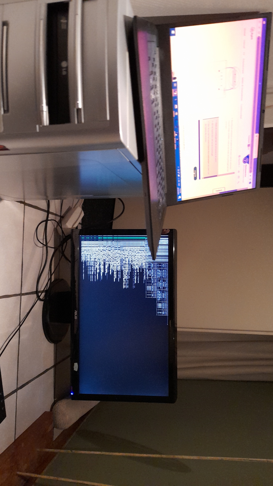

De initïele opzet van de linux server
Ik ben begonnen met het verkennen van Linux omdat ik erachter ben gekomen hoe krachtig het besturingssysteem is. Dus waarom zou ik er niet zelf mee spelen? Toen ik bij mijn vader was, vond ik een oude computer die ik helemaal was vergeten. Ik nam het mee naar huis en begon het om te zetten naar een Linux-server.
Ik moet zeggen dat de installatie van het systeem niet zonder problemen verliep. Ik had bijvoorbeeld veel problemen met het maken van een opstartbare USB-stick. Ik probeerde het eerst met een SD-kaart, maar de installatie mislukte vaak. Toen ik het met een harde schijf ondernam ontdekte ik dat het niet eens mogelijk was vanwege de grootte van de schijf (5 TB), terwijl de ISO-grootte 20 GB was. Uiteindelijk lukte het me om een gewone USB-stick vrij te maken en ik kon de installatie uitvoeren. Hiervoor heb ik de bios van de computer moeten openen. Hier moest ik de opstartbare usb selecteren om vanuit te booten.
Helaas is mijn computer te groot om hem altijd bij de meterkast neer te zetten, waar hij direct aan de router kan worden gekoppeld, en was er geen mogelijkheid om een ethernetkabel naar boven te leiden. Ik moest dus een wifi-adapter kopen en bevestigen. Tijdens deze configuratie zag mijn opstelling er zo uit:
Ik wil een shout-out geven naar onze kut ISP(kpn) voor de slechte ophanging van de router, die zo werd geplaatst dat het onmogelijk was om een internetkabel aan te sluiten. Gelukkig heb ik na veel geknoei, met de hulp van een vriend, de router veilig los kunnen koppelen. Ik ben tevens geen voorstander van het idee dat mijn ISP mijn internetactiviteit kan zien, dus binnenkort ga ik projecten starten om dit tegen te gaan, zoals door het gebruik van een Raspberry Pi.
Voor het installeren van de wifi-adapter heb ik de Archer T3U van TP-Link aangeschaft. Via GitHub heb ik de bijbehorende driver gevonden en was de installatie gemakkelijk te doen; ik activeerde de wlan-interface en verbond met de SSID (netwerknaam). Mijn server is nu eindelijk klaar voor gebruik en ik kan hem nu op mijn kamer plaatsen en er verbinding mee maken via SSH (Secure Socket Shell), zonder dat ik een desktop nodig heb. Hij staat nu uit het zicht achter mijn spiegel. Niet gedacht dat ik deze 'dino' ooit nog ging aanraken.
Maar wat als ik niet thuis ben en aan mijn server wil werken, bijvoorbeeld op school? In dat geval moet het verkeer dat ik naar mijn server stuur worden versleuteld, of getunneld. In toekomstige projecten wil ik hier meer onderzoek naar doen.
Ga terug